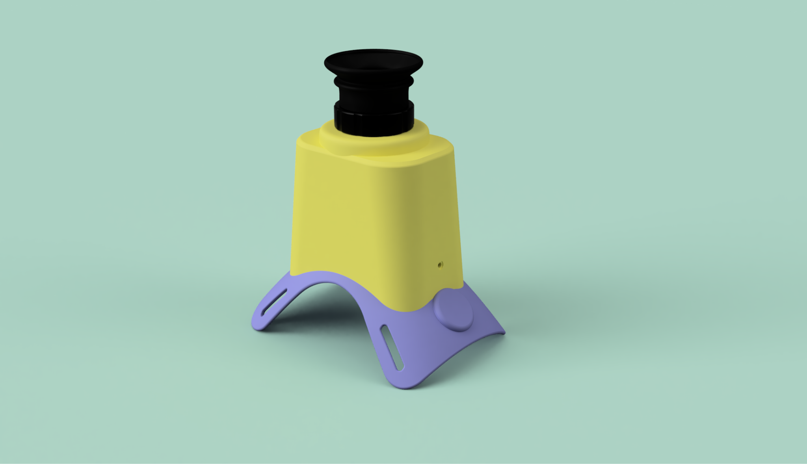
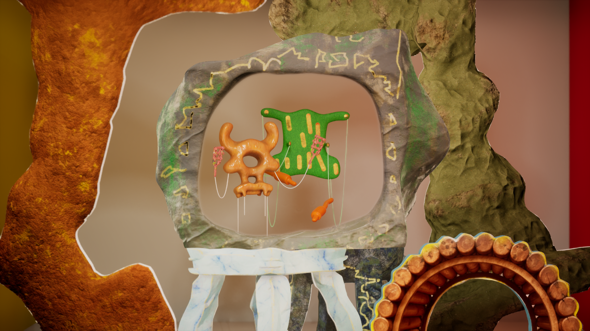
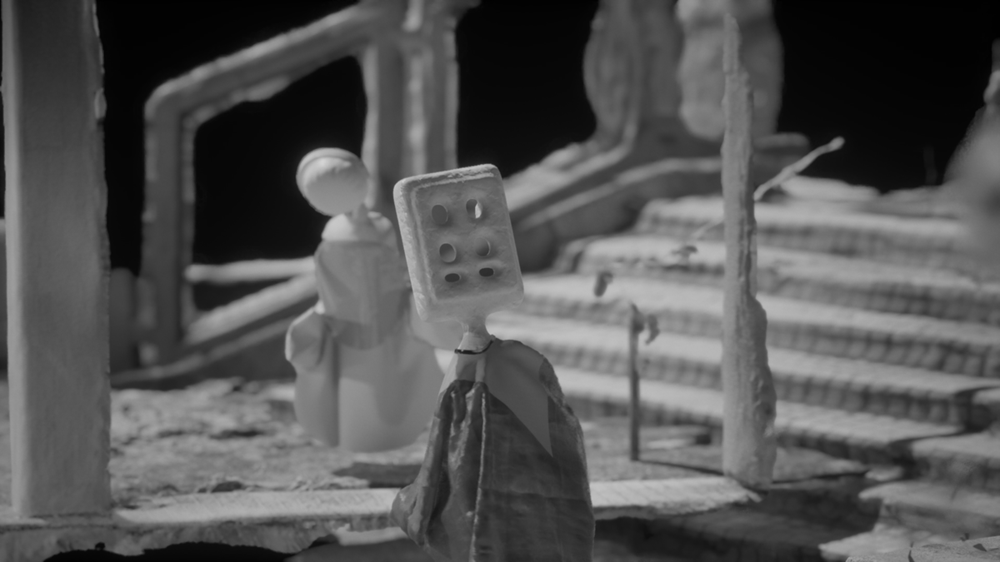
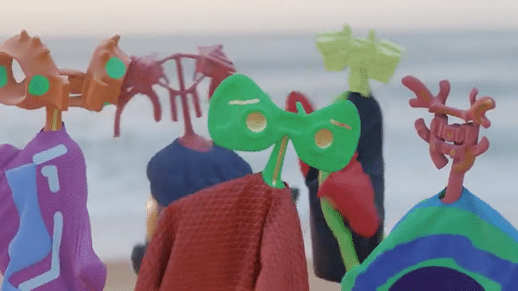
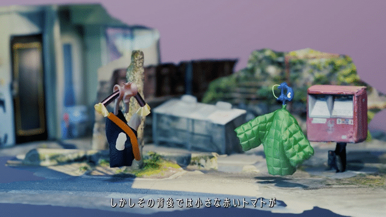
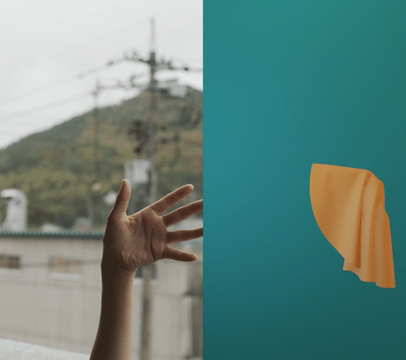
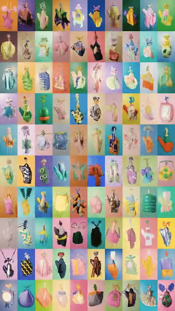
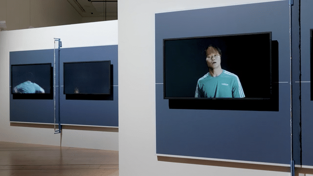
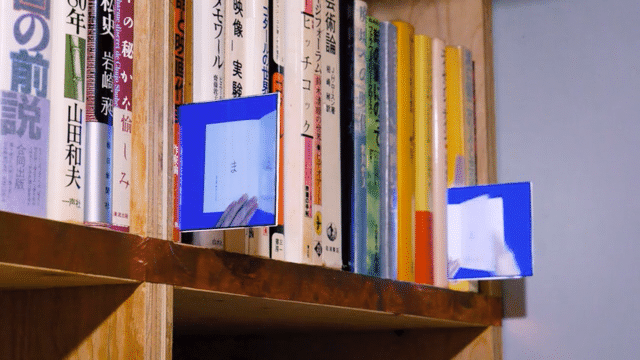
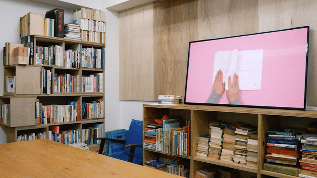

Works
-

JP:肘シアター
EN:Elbow-Mounted Theater
福留 麻里 + 時里 充 / Mari Fukutome + Mitsuru Tokisato
-

JP:へんしんエクササイズ #1
EN:Shape-Shifting Exercise #1
時里 充 / Mitsuru Tokisato
-

JP:ハンドメイドムーブメント season 2
EN:Handmade movement season 2
時里 充 / Mitsuru Tokisato
-

JP:ハンドメイドムーブメント season 1.5 大体の事柄は布に覆われてしまっている 階段の上と下で
EN:Handmade movement season 1.5 Most Matters Are Obscured by Cloth, at the top and bottom of the stairs
時里 充 / Mitsuru Tokisato
-

JP:バスクのスポーツ - Chacruna (feat.よだまりえ) -Music Video
EN:VSQ sports - Chacruna (feat.Marie Yoda) -Music Video
-

JP:ハンドメイドムーブメント season1 大体の事柄は布に覆われてしまっている。
EN:Hand Made Movement season1 Most Matters Are Obscured by Cloth
時里 充 / Mitsuru Tokisato
-

JP:ハンドメイドムーブメント ベランダで手を動かす
EN:Handmade Movement Movement for hands in veranda
時里 充 / Mitsuru Tokisato
-

JP:ハンド メイド ムーブメント 2021.08.24-2021.12.01
EN:Handmade Movement 2021.08.24-2021.12.01
時里 充 / Mitsuru Tokisato
-

JP:見た目カウント トレーニング#3 エクササイズ
EN:Counting Appearances Training#3 Exercise
時里 充 / Mitsuru Tokisato
-

JP:テーブルテニスダンサーズ
EN:TABLE TENNIS DANCERS
Aokid + 福留麻里 /Mari Fukutome + 時里 充 / Mitsuru Tokisato
-

JP:めくる映像 実験 04(一ページ一字の実験)
EN:Turning over Pages in the Monitor#4
伊東 友子 ＋ 時里 充 / Tomoko Ito + Mitsuru Tokisato
-

JP:めくる映像 実験 03(折り返しの実験)
EN:Turning over Pages in the Monitor#3
伊東 友子 ＋ 時里 充 / Tomoko Ito + Mitsuru Tokisato
-

JP:めくる映像 実験 02(じわじわと本をめくる実験)
EN:Turning over Pages in the Monitor#2
伊東 友子 ＋ 時里 充 / Tomoko Ito + Mitsuru Tokisato
-

JP:めくる映像 実験 01(ひたすらに本をめくる実験)
EN:Turning over Pages in the Monitor#1
伊東 友子 ＋ 時里 充 / Tomoko Ito + Mitsuru Tokisato